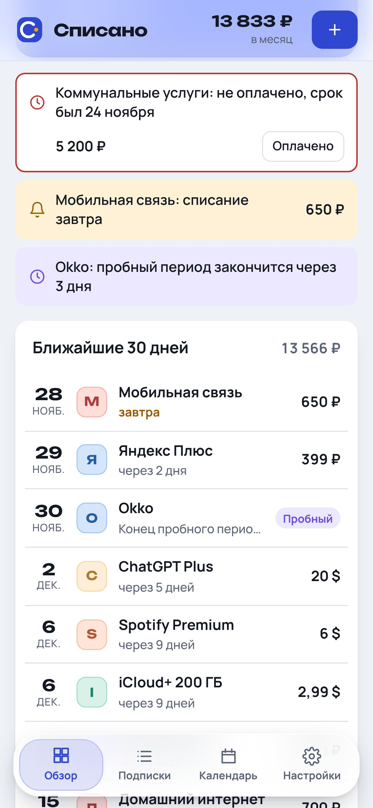

Напомнит заранее.
За день до списания, даже если приложение закрыто. И за день до конца пробного периода, пока его ещё можно отменить.

Так банк сообщает о подписке, про которую ты забыл. Приложение «Списано» скажет об этом за день до.
Бесплатно. Без регистрации и рекламы.
Okko, подписка
Мобильная связь
Яндекс Плюс
Домашний интернет
Спортзал
Все подписки и регулярные платежи в одной сумме: в месяц, в год и в день. Валюты пересчитываются сами.

За день до списания, даже если приложение закрыто. И за день до конца пробного периода, пока его ещё можно отменить.

Каждое списание стоит на своём дне. Сразу видно, на какую неделю приходится больше всего.

Годовые подписки больше не застают врасплох: прогноз показывает, в каком месяце они придут.

Android 7 или новее. На iPhone открой сайт в Safari и нажми «Поделиться», затем «На экран „Домой“».